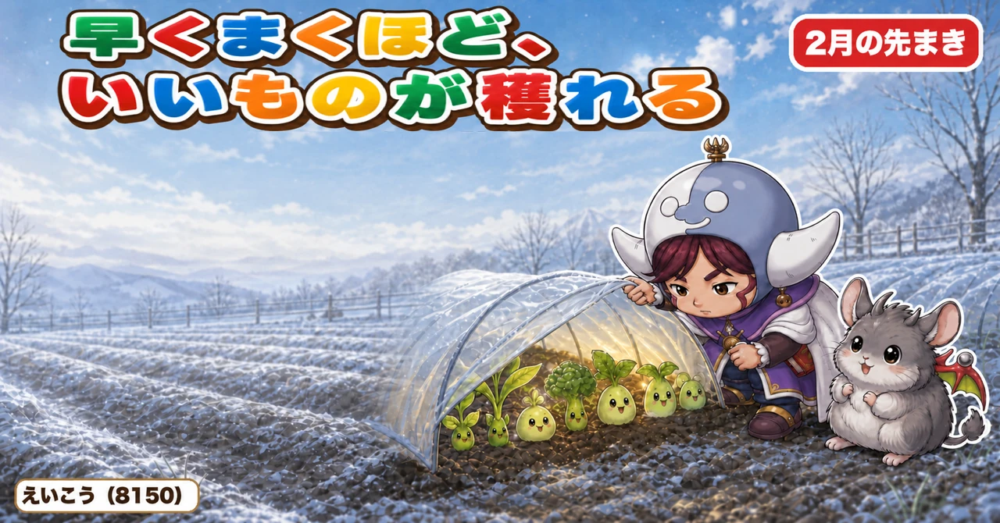
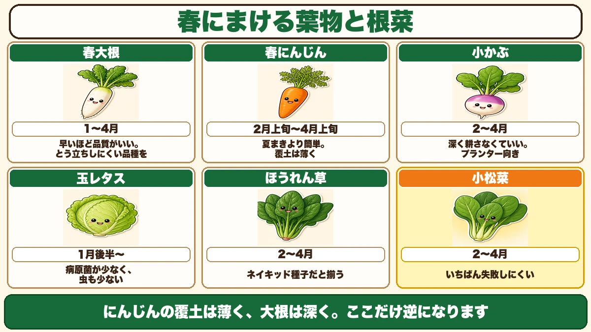
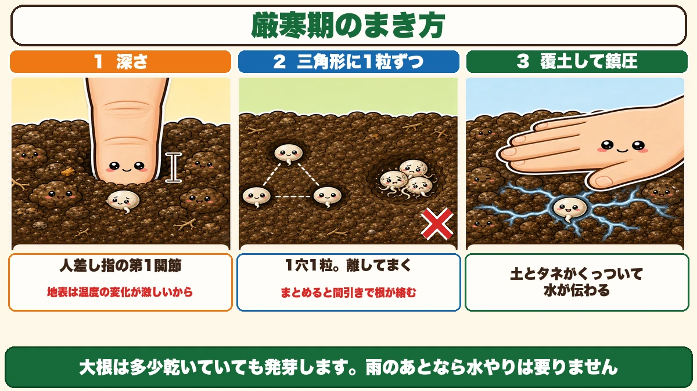
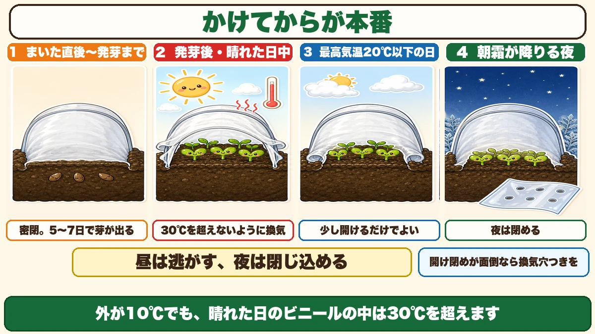
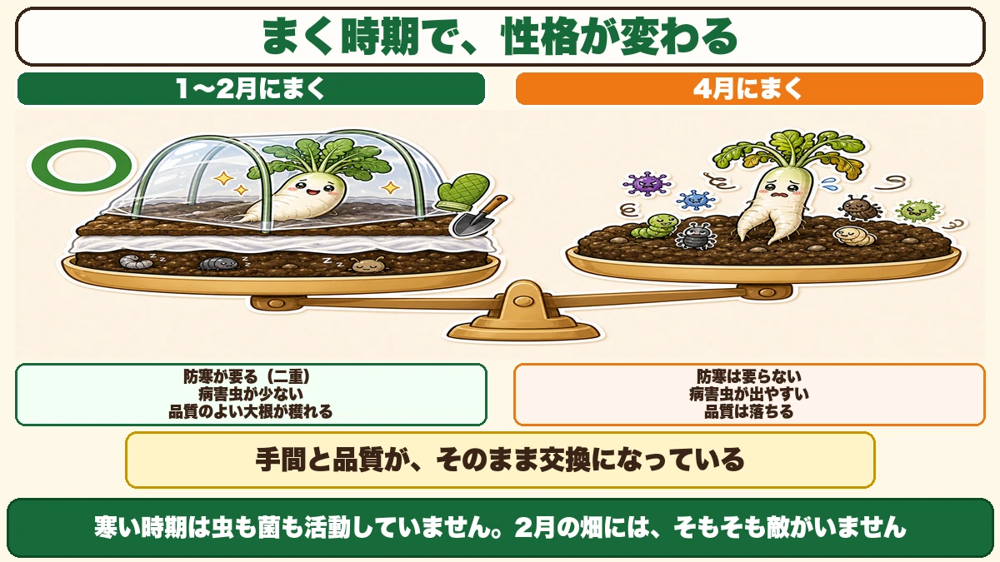

春の葉物と根菜の栽培案内｜まき時・発芽・換気・とう立ち対策

どうも、8150（えいこう）です🌱 家庭菜園歴8年、理科の教員免許を持っていて、有機・無農薬で野菜を育てています。
📖 この記事の目次
この記事で分かること
- 春大根は春まき向けの品種を選び、寒い時期は発芽までの保温と、発芽後の換気を組み合わせます。
- にんじんは浅くまき、芽が出るまで土を乾かさない段取りを優先します。大根と同じ覆土にはしません。
- 早くまくほど手入れが減るわけではありません。防寒と開閉に使える時間から、開始日を決めます。
- かぶと葉物は、品種の適期、欲しい収穫サイズ、春のとう立ちを見て選びます。レタスは種類を分けて考えます。
- 芽が出ないときは温度・水分・覆土を、育ちが悪いときは混み合い・排水・虫を順番に調べます。
- 水やりや元肥の違う説明は、野菜、季節、畑の履歴をそろえて比べると、使い分けが見えてきます。
春の種売り場って、なんか全部まけそうな気持ちになりますよね。でも『春にまける』と『今日、この場所でまける』は少し違います。寒い土で始める大根と、暖かくなってから始める葉物では、用意するものも観察の順番も変わります。
まず決めたいのは『早く収穫したい』『防寒の作業を少なくしたい』『小さめでも食べられればよい』のどれを優先するかです。早さを選ぶなら温度管理まで予定に入れる。手間を減らしたいなら地域と品種に合う時期まで待つ。小さな収穫を楽しむなら、完成した大玉だけを目標にしない。ここが決まると、種袋の選び方もすっきりします。
このページでは、春大根とにんじんの具体的なまき方を軸に、かぶ、レタス、ほうれん草、小松菜を選ぶときの確認事項をまとめます。葉物のすべてに同じ播種日や日数を当てはめず、種類ごとの違いを残しました。早見で予定を立て、手順で作業し、困ったら症状の章へ戻る使い方で大丈夫です☺️

早見：春の葉物と根菜の育て方（ひと目で分かる数字）
春大根の数字と条件
- まき時：一般地を対象にした栽培説明では1〜4月。1〜2月の開始には防寒を組み合わせ、4月まきでは虫の発生に目を向けます。寒冷地や暖地の適期は、使う品種の地域別表示で確認してください。
- 品種：春まきに対応し、とう立ちが遅い性質を持つもの。『晩抽性』という表示は、花の茎が伸びにくい性質のことです。花が絶対に出ないという意味ではありません。
- 種の数：1か所2〜3粒という春まきの実演例があります。3粒の場合もひとまとめにせず、離して置き、あとで残す株を選びやすくします。
- 覆土：にんじんより深めにまく説明です。人差し指の第1関節を深さの目安にする実演がありますが、指の長さには個人差があるので、種袋の深さ指定も確認します。
- 株間と列の間隔：30cm間隔、2列の穴あきマルチを使う例があります。すべての大根の標準寸法とはせず、品種の完成サイズと照合してください。
- うね幅：幅95cmのマルチを使う例があります。ただし、シートの幅と、実際に作るうね上面の幅は同じ数字とは限りません。端を固定する部分と通路を見込んで設計します。
- 元肥：すでに野菜を育ててきた畑で、元肥を追加せず始める説明があります。初めて耕す場所や肥料分の乏しい土も同じ扱いにはしません。
- 追肥：春大根について、今回の材料から共通の回数や開始日を決められる数字はありません。品種の説明と元肥の計画を先に確認します。
- 発芽：防寒をした早まきの例で5〜7日ほど。ただし気温で変わります。7日目に出なかっただけで失敗とは決めません。
- 換気：発芽後はトンネル内を30℃以上にしないことが管理の目安。外気の最高気温が20℃以下でも、中の温度を見て裾を開けます。
- 収穫まで：春まきの全品種に使える日数は、ここでは一つに定めません。袋の収穫目安と実物の太り方を見て、とう立ちするまで待ちすぎないようにします。
- 連作：大根の収穫跡で再び栽培する説明もあります。何年あければよいという共通年数は材料にありません。前作の病気や生育不良を無視して続ける判断には使わないでください。
春にんじんの数字と条件
- まき時：一般地の説明で2月上旬〜4月上旬。遅れると生育の後半が暑い時期に重なり、太り方や色付きに影響するため、地域の春まき適期を先に押さえます。
- 発芽に向く温度：15〜25℃という説明があります。8℃以下でも出ることはありますが、30日以上かかる場合があるとされます。低温では待ち時間も変わります。
- 発芽日数：適温時の日数は元の記録に数字の重複があり、確かな範囲として示せません。大根の5〜7日を借りて予定を立てないことが大切です。
- 種の数：1か所2粒を離して置く実演があります。筋まきとは種の配置が違うため、種袋の栽培方法に合わせて選びます。
- 株間と列の間隔：15cm間隔、5列の穴あきマルチを使う例があります。一方、寒い時期の別の説明では間引き後5〜10cm程度という案があります。まき方や品種をそろえず平均の間隔にはしません。
- うね幅：こちらも幅95cmのマルチ使用例です。実際のうね上面を95cmと決める数字ではありません。
- 元肥：前もって土を整える方法と、畑に残る肥料分を生かす方法があります。後者の説明には夏まきの資料も含まれるため、春の標準量へ置き換えません。
- 追肥：寒い時期の栽培説明に、まいて約1か月後から月1回ほど行う例があります。別の春まき説明には間引きの際に追肥する方法もあり、一つの回数へ統一しません。
- 防寒：2月は不織布のべたがけとトンネルの併用。3月はトンネルだけ、3月下旬なら不織布だけという説明があります。日付だけでなく、その地域の冷え込みも見ます。
- 収穫時期：寒い時期に始めて5月ごろ、または5月下旬〜6月に収穫する例があります。播種日と品種が違うので、全部を『何日で完成』へ換算しないようにします。
- 連作の間隔：今回の材料に春にんじん共通の年数はありません。前作、排水、病気の有無を記録し、同じ場所で不調が続くなら場所の見直しを考えます。
かぶと葉物は、まず表示を確かめる
- かぶ：1〜2月の播種に二重の防寒を使う説明があります。12月まきで小かぶ、2月まきで大きなサイズまで育つという品種の例もありますが、すべてのかぶに保証される数字ではありません。
- レタス：半結球系の説明に、2月に種をまいて3月に苗を植える案があります。冬から育てたリーフ系は、3月ごろから小さくても早めに収穫する説明です。新しく春に植える苗とは区別します。
- ほうれん草：長い期間まける品種の紹介はありますが、全品種共通の春まき期間ではありません。地域別の適期ととう立ちへの強さ、夜間の照明環境を確認します。
- 小松菜：幅広い時期に対応する品種が候補です。寒い時期の保温と、春に気温が上がったあとの虫の観察をセットにします。
- 4品目の株間・うね幅・元肥・追肥・収穫日数・連作年数：今回の春作の材料では統一できません。使う品種とまき方の表示を読み、数字が確認できない欄を他の野菜の値で埋めないでください。
一覧に空白があると、全部埋めたくなるんですよね。でも、冬の小松菜の数字を春へ移したり、ロメインの株間を玉レタスへ使ったりすると、見た目だけ整ってしまいます。欲しいのはきれいな予定表より、みなさんの野菜に合う予定です。
- 野菜名だけでなく品種名も記録する
- まく地域と、防寒の有無を決める
- 播種日と収穫予定を別々に書く
- 日数の起点が種まきか植え付けかを確認する
- 土と葉の実物を見て、予定を更新する
作業の手順（時期の順）
種を買う前に、管理できる時間を決める
- 畑へ行ける曜日と、朝夕の作業ができるかを書き出します。早まきで密閉するトンネルを使うなら、発芽後に開閉できる段取りまで考えておきます。
- 収穫の目的を『根を太らせる』『葉を小さめから食べる』『レタスを玉にする』に分けます。同じ面積でも必要な期間と間隔が違います。
- 地域に合う春まき品種を探し、適期を確認します。大根とにんじんでは、とう立ちしにくい性質も選ぶ条件にします。
- 種、覆う資材、温度を確認する道具を準備してからまきます。まいたあとに防寒を考える順番にしない方が、作業が落ち着きます。
早さを優先する予定なのに、発芽後は次の週末まで見られない。これだと、野菜の生育と人の予定がぶつかります。無理に早く始めなくても大丈夫です。地域の適期内で少し待つ、開閉の負担を減らす資材を選ぶ、葉物を少量から試すという道があります。
穴あきのトンネル用フィルムは、通気を助ける選択肢です。ただ、穴があることだけで中の温度がいつも適切になるわけではありません。使う製品の説明、日当たり、風の通り方も見てください。設置できることと、管理できることはセットで考えたいです。
播種前：土の履歴と水の逃げ道を確認する
- 前に育てた野菜、入れた肥料、虫や病気の発生を思い出して記録します。前作がよく育った畑と、初めて野菜を作る場所では、準備の出発点が違います。
- 雨のあとに水がたまり続けないかを見ます。とくににんじんは水はけの悪い土に弱いという説明があり、保湿だけを優先しないことが大切です。
- 根が伸びる場所を耕し、石などの障害物を確認します。にんじんや大根は、まっすぐ下へ伸びる根を育てるので、その通り道を整えます。
- 土の状態に応じて元肥の計画を立てます。酸度を測れる場合は測定結果も使い、例に出てきたpH6.5を、測らずに自分の土の数値として扱わないようにします。
- まく間隔、うね、通路を決めます。トンネルを開けて観察する場所も残してください。葉に届かないほど詰めると、あとで虫を探す作業が大変です。
『肥料なしで育った』という話は、土に何もないという意味とは限りません。前の栽培で残った肥料分が使われている場合もあります。逆に、毎回足せば安心とも言い切れません。何を足すかの前に、今の土にどんな履歴があるかを見ます。
資材や肥料の固有名をたくさん並べるより、まず水が抜けるか、根が伸びるか、肥料をすでに入れているか。ここを確認すると、準備の抜けが見つけやすくなります。土づくりという大きな言葉を、目の前の三つの確認へ分ける感じです。
播種当日：春大根は種を離して配置する
- 春まき用の品種と適期をもう一度確かめます。秋に残った種がある場合も、春に使える表示があるかを見てください。
- 地温を確保する方法を選び、土の表面にマルチを張る場合は風でめくれないように固定します。黒いマルチを使う実演と、透明を使う説明があります。色の使い分けは後の章で整理します。
- 種を置く場所を作り、1か所2〜3粒を離してまきます。3粒なら小さな三角形になるように配置する方法があります。重ねないことが、あとで株を選ぶ助けになります。
- 土をかぶせ、手で軽く押さえて種と土を密着させます。この押さえる作業を『鎮圧』といいます。強く固め続ける作業ではありません。
- まいた場所の乾き具合を確認します。雨のあとで湿っているなら水を加えない説明があり、乾いていれば軽く水を与える方法があります。
- 1〜2月の厳寒期の例では、不織布を株の場所へ直接かけ、その上にトンネルを設置します。裾の固定まで済ませて、播種日を記録します。
ここで大切なのは、大根とにんじんの覆土を同じ手つきにしないことです。大根は発芽時に光を嫌う性質として、やや深めにまく説明があります。だからといって、どこまでも深く埋めればよいわけではありません。深さの最終確認は、まく品種の表示へ戻ります。
種を三つ離したのに、最後は三本全部残す。これでは、離してまいた狙いが途中で変わってしまいます。大きな根を育てる予定なら、発芽後に選ぶ作業までが一組です。まいた日の成功だけでなく、その先の間引きも予定欄に置いてください。

播種当日：にんじんは薄い覆土と保湿を優先する
- 春まきに合う品種を選び、種の購入時期と保存状態を確認します。古い種の発芽率低下を指摘する説明もあるため、余り種を使うときはその点も見ます。
- 土を整えて種を置く位置を作ります。にんじんは発芽に光が関わるので、深い穴へ大根と同じように埋めません。
- 点まきなら1か所2粒を離して置く例があります。筋まきを選ぶなら、その品種に合うまき方で並べてください。別の方法の株間だけを混ぜないようにします。
- 薄く土をかけ、種が土へ接するように軽く押さえます。土がふわふわのまま浮いている部分を残さないことが狙いです。
- 水を与え、発芽まで乾かさないようにします。種をまいた日に一度ぬらしただけで終わらず、翌日以降の乾き方も見ます。
- 2月の例なら不織布とトンネルを併用します。3月は冷え込みに合わせて覆い方を選び、播種日と防寒の方法を書いておきます。
にんじんは種が小さいので、土をしっかりかけた方が守れる気がするんですよね。でも、守ろうとして光が届きにくくなると、発芽の条件から外れてしまいます。薄い覆土、土との密着、水分。この三つを一緒に整える方が、作業の意味がつながります。
種に加工がしてある場合は、周囲の被膜が溶けるだけの水分も必要になります。まきやすい形だから、水分管理まで楽になるとは限りません。手に取った種の説明を読み、乾きやすい場所でどう維持するかを考えてから選んでください。
発芽まで：日数より、土と温度を見る
- 毎回同じ場所だけでなく、まいた列全体を見ます。発芽が片側だけに偏るなら、日当たりや乾燥、覆いの隙間に差がないか確認します。
- 表面が乾いていないか、逆に水がたまっていないかを調べます。にんじんの保湿を優先しても、土を常に水浸しにする必要はありません。
- 防寒した内部の温度を確認します。にんじんの発芽に向く15〜25℃という説明を、外気温だけで判断しないようにしてください。
- 低温で発芽が遅れている可能性を考えます。まき直す前に、種、覆土、乾燥、寒さの順で原因を見直します。
早まきの実演では、発芽まではトンネルを閉じて温度を確保しています。これは寒い時期に行う管理で、暖かな日にいつまでも密閉するという意味ではありません。春は気温の変化が大きいので、芽が出る前も中の状態を確認する習慣をつけておくと、その後へ移りやすいです。
大根で示される5〜7日と、低温のにんじんで30日以上かかる話は、同じ待ち時間ではありません。『隣の列は出たのに』だけで判断せず、その列が何の野菜で、どんな深さにまかれているかを思い出してください。
発芽後：保温中心から、昼の換気へ切り替える
- 芽を確認したら、その日から換気を管理項目に加えます。発芽前に閉じていた状態を、そのまま育苗期間全体へ延長しないようにします。
- 晴れた昼は内部の温度を見て、裾を開けるなどして熱を逃がします。大根とにんじんの説明では、30℃以上にしないことが目安です。
- 夕方は夜の冷え込みを確認します。霜が予想される場合は裾を閉めるなど、昼と夜で対応を変えます。
- 開閉時に葉と土も観察します。葉裏や中心の虫、しおれ、乾燥に気づけるので、換気と見回りを同じ作業にすると続けやすいです。
- 暖かくなったら覆いの重ね方を見直します。冬の設定を固定せず、地域と品種の条件に応じて保温を減らしていきます。
春のトンネルには『寒さを防ぐ道具』という印象がありますが、晴れた昼には熱がこもります。朝は冷え、昼は上がり、夜はまた冷える。なんか忙しいですね(笑)。だから、外の季節名より、中の状態を基準にします。
留守の日のために穴あきの資材を選んでも、設置後の確認は必要です。風で裾が浮いていないか、穴を別の覆いで塞いでいないかも見てください。通気のための穴を重ねた資材で覆えば、最初に想定した通気条件が変わってしまいます。

生育中：間引き、追肥、虫の観察を分けて行う
- 大根やにんじんは、選んだ栽培法に従って残す株を決めます。点まきのにんじんを最終的に1本へする方法など、まいた数と残す数を区別してください。
- 間引き後は残した株が倒れていないか、根元の土が乱れていないかを見ます。間隔だけ確認して終わらず、残す株の状態を確かめます。
- 追肥は、元肥と前作の履歴を見て判断します。にんじんの月1回という例を、すべての葉物へ広げないようにします。
- 葉の穴や葉裏の小さな虫を確認します。寒い時期でもトンネル内の虫が増える場合があります。覆いの存在だけで安心しないことが大切です。
- 根が太らないときは、肥料を足す前に、混み合い、葉の被害、排水、まだ初期の生育段階なのかを調べます。
葉が元気なら地下も完成している、と思いたくなります。でも大根は、まず葉が増え、そのあと根の肥大が進む説明があります。葉の見栄えだけで収穫日を確定せず、根元を観察してください。逆に、根を育てたいから葉はいらないという判断も違います。早い段階の葉を守ることは、根の成長を支える作業です。
冬のほうれん草には、間引かず大きい株から取る方法が紹介されています。その方法を春の大根やにんじんへ持って来ないようにします。食べたい部分と、育つ季節が違うからです。同じ『間引き』でも、残す目的を確かめると迷いが減ります。
収穫期：大きさを待つより、食べる予定を立てる
- 種袋の目安が近づいたら、根の太り方や葉の状態を観察します。予定日になれば必ず完成する、という扱いにはしません。
- 春大根は、十分育った株から収穫する計画にします。大きさを追いすぎて花の茎が伸びるまで待たないようにします。
- かぶは欲しいサイズと品種の特徴に合わせて収穫します。小かぶとして食べたい株を、理由なく大かぶになるまで残す必要はありません。
- 冬越ししたリーフレタスなどは、春のとう立ちを意識して小さくても利用します。新しく植えた玉レタスとは目標を分けます。
- 抜いたあとには、生育と虫の記録を残します。次に同じ場所を使うかは、その結果を見て決めてください。
私も1年目、大根を抜くときは全部手で引き抜いていて、大根がくねくねになってしまいました。収穫できるまで育てたからこそ、最後の扱いも落ち着いて進めたいですね。抜きにくい株を力だけで引っぱり続けず、根元を確かめながら作業するのがよいかなと思います。
一度に食べ切れない量をまくと、収穫の判断が『もう少し畑へ置こう』に寄りがちです。春はとう立ちも進むので、最初から食べる量と収穫の順番を考えておきます。大きさの記録だけでなく、食べる予定まで書いておくと、待ちすぎを減らしやすいです。
失敗の見分け方（症状→原因→やること）
にんじんの芽がなかなか出ない
- 症状：まいた場所に芽が見えず、隣の大根だけが先に育っています。
- 考えられる原因：地温が低い、発芽中に乾いた、覆土が厚い、種が古いなど。大根と同じ日数で判断している可能性もあります。
- やること：播種日と種の状態を確認し、土の乾き、覆土、内部の温度を順に調べます。原因を残したまま新しい種を追加しないようにします。
待つかまき直すかは、経過日数だけでは決めにくいです。低温で遅れているなら温度確保の見直しが必要ですし、乾燥が続いたなら保湿の段取りを変える必要があります。同じ失敗を繰り返さないために、『何日だったか』と一緒に『どんな状態だったか』を記録してください。
列の一部だけ発芽しない
- 症状：同じ袋の種を同じ日にまいたのに、出た場所と空白の場所があります。
- 考えられる原因：覆土の厚み、水分、日当たり、防寒の隙間に差がある可能性があります。種の配置が不ぞろいだったことも確認します。
- やること：出た場所と出ない場所を見比べ、片側だけ乾いていないか、土が厚く重なっていないかを調べます。追加播種をする場合も、先にその差を直します。
全面で出ない場合と、一部で出ない場合は、調べる入口が違います。一部の空白なら、まず近くの発芽した場所が比較相手になります。なんか理科の実験みたいですが、同じ条件と違う条件を見つけると、対策が絞りやすいです。
晴れた昼だけ苗がぐったりする
- 症状：トンネルの中の苗が昼にしおれ、朝とは様子が違います。
- 考えられる原因：内部の過温や土の乾燥など。土がすでに湿っている場合は、さらに水を足す判断を急がないようにします。
- やること：まず内部の温度と土を確認し、暑ければ換気します。乾燥が原因なら水分を調整し、夕方の状態も見て記録します。
しおれを見たら反射的に水をまきたくなりますよね。先に土へ触れてみてください。熱がこもっているなら、熱を逃がす作業が必要です。土が湿り続け、根に問題があるなら、毎回の水追加で解決するとは限りません。葉の症状と土の状態をセットで見ると、対応がずれにくくなります。
水を与えているのに伸びない
- 症状：葉の伸びが弱く、土はいつも湿っています。
- 考えられる原因：排水の悪さや根の不調、寒さなどが考えられます。とくににんじんでは、水はけの悪い土が根の形や色付きへ影響する説明があります。
- やること：雨のあとに水が残る場所を確認し、余分な水を加える習慣を見直します。肥料を追加する前に、根が働ける状態かを考えてください。
『発芽には水が必要』と『生育中も常にぬれている方がよい』は同じ話ではありません。まいた種へ必要な水分を届けることと、根の周囲に水をため続けることを分けます。保湿と排水は、片方だけを選ぶ関係ではないんですよね。
葉ばかり大きく見えて、根が細い
- 症状：大根の葉は茂っているのに、根元の太り方が思ったほど進んでいません。
- 考えられる原因：まだ葉を増やす段階、株の混み合い、葉の被害、生育条件の不足など。葉の大きさだけで根の完成を予想している可能性もあります。
- やること：播種日、間引き、葉の食害、根元を確かめます。『根が細いから追肥』と一手に決めず、段階と原因を見てください。
大根は先に葉が育ち、そのあと根が太るという順番があります。葉が大きいこと自体を悪い兆候と決めません。ただ、一本の場所へ何本も残しているなら、予定していた根の大きさとの関係を見直します。葉を切って地下へ栄養を回そうとする判断も、ここでの対策にはしません。
大根やにんじんの中心から茎が伸びてくる
- 症状：食べたい根の肥大を待つ間に、中心の形が変わり、花の茎やつぼみが目立ちます。
- 考えられる原因：とう立ちです。季節の温度や日長、品種の性質が関わります。にんじんでは、ある程度育った株が低温に一定期間あう条件も説明されています。
- やること：春まきに向く品種だったか、収穫を待ちすぎていないかを確認します。肥料を足して花茎を元へ戻す計画にはせず、収穫へ切り替えるかを判断します。
次の栽培では、品種と播種日の記録が役に立ちます。花が出たから『春に根菜は無理』と広く結論を出す必要はありません。適期、品種、収穫の待ち方を分けて振り返る方が、次の一手を選びやすいです。
レタスが丸くならない
- 症状：育っているのに、想像していた玉の形になりません。
- 考えられる原因：そもそもリーフ系やロメイン系を育てている、玉レタスの生育途中、品種と季節が合っていないなど。形の違いと栽培不良を区別します。
- やること：最初に種袋や苗のラベルで種類を確認します。半結球のロメインへ、玉レタスの完成形を求めないようにしてください。
葉が立つ、広がる、重なって玉になる。レタスという一つの名前の中でも姿は違います。まず野菜の名札を読むだけで、『失敗した』と思っていたことが、本来の姿だったと分かる場合もあります。形を知ってから育ちを評価しましょう。
冬のはずなのに、葉裏に虫が増えている
- 症状：覆いの中に小さな虫がつき、葉が傷んだり、集まったりしています。
- 考えられる原因：前作からの持ち越し、暖かなトンネル内での増殖、覆いの隙間からの侵入など。寒い季節でも、内部は外気と同じ条件ではありません。
- やること：葉裏と中心を調べ、虫を確認して取り除きます。裾や破れも見直し、必要な換気を行います。被害を見ずに『冬なので虫はいない』と決めないでください。
防虫ネットは侵入を抑えるためのものです。すでに内側にいる虫を消してくれる道具ではありません。設置する前の確認と、設置したあとの観察を合わせて使います。開閉のときに数枚の葉を返して見るだけでも、見回りのきっかけになります。
説明が分かれていること
早まきは品質をねらえるのか、手間が多いのか
- Aという説明：春大根の厳寒期播種では、病害虫が少ない時期を利用し、よい品質を早く収穫する狙いがあります。
- Bという説明：寒い時期には保温が必要で、発芽後は昼の換気と夜の閉鎖が管理に加わります。暖かくなってからの播種では、防寒の負担が変わります。
- どう考えればよいか：品質や早さをねらう話と、管理の量を比べる話を分けます。早まきが自動的に楽になるわけではないので、開閉できるかを判断に入れます。

春大根の話を、にんじんや全葉物へ一括して広げないことも大切です。にんじんには春まきが発芽管理をしやすいという説明がある一方、夏まきの方が太くがっしり育つという説明もあります。どの野菜の、何を評価した話なのかを残すと、単純な勝ち負けにしなくて済みます。
大根のマルチは黒か、透明か
- Aという説明：春大根の播種実演では、地温を確保する目的で黒いポリマルチを使っています。
- Bという説明：寒い時期の品種紹介には、透明マルチと透明トンネルを組み合わせる指定があります。
- どう考えればよいか：どちらも寒い時期の温度確保の話ですが、今回の材料では優劣を決める同条件の比較がありません。色だけで唯一の正解を決めず、栽培法全体と地域の条件を見ます。
すでに黒を使っているから全部やり直す、透明なら換気しなくてよい、という読み方にはしません。地面のシートと上のトンネルは役割や位置が違います。何をどこへ掛ける説明なのかまで確認すると、資材の取り違えを減らせます。
元肥は入れるのか、入れないのか
- Aという説明：春大根には、野菜を育ててきた土で元肥を追加せず始める実演があります。
- Bという説明：初めての場所や痩せた土地では、前もって土を整える指示があります。にんじんにも施肥を伴う準備の例があります。
- どう考えればよいか：『追加しない』と『土に肥料分がない』を分けます。前作と土の状態が違うので、回数だけで良し悪しを決めません。
残肥を利用するにんじんの説明には夏作の資料もあります。春の計画へ採り入れるなら、季節が違うことを残し、いまの畑の履歴を確かめてください。量が不明なのに、その方法を理由に肥料を全部省く判断はしない方がよいです。
大根へ水をやるのか、やらないのか
- Aという説明：春大根の種まき時は、土が乾いている場合や発芽を早めたい場合に軽く水を与えます。
- Bという説明：冬大根のマルチ栽培中には、水を足さず、地温低下や根腐れに注意する説明があります。
- どう考えればよいか：播種の瞬間と、生育中の管理を分けます。湿った土へ追加しないことと、乾いた種まき場所へ水を与えることは両立します。
にんじんへも同じ『水不要』を適用しないでください。にんじんの春播種では、薄い覆土と鎮圧に水やりを組み合わせる説明です。野菜名、作業段階、土の湿りをそろえると、どの説明を使うかがはっきりします。
加工されたにんじんの種は便利か、難しいか
- Aという説明：ペレット種子は小さな種を扱いやすく加工してあり、離して置く春まきの実演に使われています。
- Bという説明：夏の乾燥条件では、被膜が溶ける水分が不足すると発芽しづらいとして、未加工の種を勧める説明があります。
- どう考えればよいか：まきやすさと、乾燥下での発芽を分けて考えます。春の保湿できる環境と、夏の乾きやすい環境では判断の条件が違います。
種の加工名が示すのは扱い方の特徴で、発芽を保証する札ではありません。どちらを選ぶ場合も、水と温度と覆土を整えることは必要です。なお、この比較をほうれん草の種へそのまま移す根拠は、今回の材料にはありません。
ほうれん草は間引かなくてもよいのか
- Aという説明：冬のほうれん草では、間引かずに大きい株から収穫する方法があります。
- Bという説明：大根では順に間引いて一本を育てる説明があります。冬のほうれん草の方法自体も、暖かい時期へ同じように適用する話ではありません。
- どう考えればよいか：作物、季節、欲しい大きさが異なります。春の根菜を太らせる予定なら、冬の葉物の収穫法だけを理由に密植を続けないようにします。
トンネルの支柱間隔は広くてよいのか
- Aという説明：風を通す防虫ネットでは、支柱間を広く取れるという説明があります。
- Bという説明：フィルムを張るトンネルや風・雪への補強では、支柱を細かく置く方法があります。
- どう考えればよいか：通気する網と、風を受けるフィルムを同じ条件として比べません。製品の指定、覆う幅、設置場所を見て構造を決めます。
関東の積雪を想定した補強例もありますが、全国の雪に耐える保証ではありません。手元の資材の強度を、別の地域の実演だけで決めないでください。温度の管理と、構造の安全は別々に確認する項目です。
よくある質問
初心者が一つだけ選ぶなら何がよいですか
小松菜は候補にできます。ただ、すべての環境で最も失敗しないという比較結果があるわけではありません。食べたい野菜を、地域の適期内に少量まく方が続けやすいです。早まきの根菜を選ぶなら、保温と発芽後の換気まで予定に入れます。
秋に余った大根の種を春に使えますか
春まきへ対応する品種か、袋の表示を見てください。大根という名前だけでは判断できません。春はとう立ちしにくい性質も選ぶ条件なので、秋の適期だけが書かれた種をそのまま使う前に確認します。
大根とにんじんは同じ穴へ同じ深さにまいてよいですか
覆土の考え方が異なります。大根は光を嫌う性質を踏まえて深め、にんじんは光が必要なため薄い覆土という説明です。配置も完成サイズも違うので、根菜をまとめて同じ播種方法にしないようにします。
寒い日が続いたら、にんじんはすぐまき直しますか
まず土の温度と水分、覆土を調べます。低温では発芽に長くかかる場合があり、大根と同じ日数で見切れません。乾燥や深まきが続いているなら、次にまく前にその原因を直してください。
にんじんには毎日水を与えるべきですか
発芽までの乾燥を避けるため、毎日の水やりを勧める説明があります。実際には雨、覆い、土の湿りも見て、乾かさない状態を維持します。生育期間全体を同じ頻度に固定する話とは区別してください。
トンネルの中が暖かければ、ずっと閉じていてよいですか
発芽後は昼の過温を防ぐ換気が必要です。大根とにんじんの説明では30℃以上にしないことが目安で、霜が予想される夜には閉める管理を組み合わせます。暖かさだけでなく、上がりすぎないことも見ます。
穴あきのフィルムなら、週末だけの見回りで大丈夫ですか
通気を助ける資材ですが、管理不要とは言い切れません。日当たりや重ねた覆いによっても内部の状態は変わります。留守が多いなら、設置後の温度を確認し、無理なく管理できる播種時期を選んでください。
大根やにんじんを苗にしてから植えられますか
今回の材料では、まっすぐ伸びる根を育てるため直まきする説明があります。移植で根を扱う方法を、葉物と同じように勧めません。根の伸びる場所を整え、収穫する場所へ直接まく段取りにします。
プランターでも始められますか
使う品種が容器栽培へ対応するか、まず表示を確認します。根菜は根が伸びる深さ、葉物は株を置く間隔、どちらも排水が必要です。今回の材料には全品目共通の容器寸法がないため、一つの深さを全部へ指定しません。
玉レタスとロメインは同じ育て方でよいですか
目標の姿が違います。玉レタスは玉を作り、ロメインは縦に育つ半結球の種類です。ロメインの省スペースの説明や秋冬の株間を、そのまま春の玉レタスへ当てはめないようにします。
小かぶを残せば、どれも大かぶになりますか
品種とまく時期によります。小・中・大で収穫できる品種の例でも、寒い時期には小さなサイズにとどまる説明があります。みなさんが育てる品種の特徴と、食べたいサイズを先に確認してください。
ほうれん草は夜に明るい場所でもよいですか
夜間の照明がとう立ちへ関わるという説明があります。昼の日当たりに加え、街灯や室内の光が夜まで当たるかも見てください。肥料だけで調整しようとせず、場所と春向け品種の両方を確認します。
花の茎が出たら、全部食べられなくなりますか
とう立ちした全野菜が一律に食べられなくなるとは、ここでは言い切りません。食べたい部分の状態や品質を確かめます。ただし、元の太り方へ戻るのを待つより、春大根などは収穫の判断を早めることが大切です。
虫が少ない時期なら、防虫の観察は省けますか
省かず、葉裏や中心を見てください。寒い時期でも、トンネル内は暖かく、持ち越した虫が増える場合があります。虫が少ない利点を生かしつつ、少ないことをゼロと扱わないようにします。
大根の跡地へ次の野菜をまいてもよいですか
大根のあとへリーフレタスを育てる例や、大根を続ける説明もあります。前作に病気や生育不良があったなら、その履歴を優先して場所を見直します。跡地の穴を使えるという話と、すべての土で連作できる保証は分けてください。
学ぶ：春まき野菜の発芽ととう立ちのしくみ🔬
種は、ぬれたらすぐ芽になるわけではない
発芽を考える入口は、水、空気、温度です。にんじんの説明でも、この三つが条件として挙げられています。水で種が活動を始められる状態になっても、温度が合わなかったり、空気の条件が悪かったりすると、期待した速さで進むとは限りません。
だから、芽が見えないときに水だけを足し続けると、原因を見落とすことがあります。乾いているなら保湿、寒いなら温度確保、厚く覆ったならまき方の見直し。作業ごとに整えたい条件が違います。
土が冷たくても時間をかけて発芽する場合と、乾燥などでうまく進まない場合を、日数だけで区別するのは難しいです。何日にまいたかだけでなく、冷えた日が続いたか、土が一度乾いたかも記録すると、見えない種の状態を考える手掛かりになります。
土をかぶせる量が違うのは、光への反応が違うから
発芽に光が関わる種には、光がある方で進みやすいものと、光を避ける条件で進みやすいものがあります。今回の春播種の説明では、にんじんと大根が異なる例です。種の大小だけを見て、覆土を一つの深さにそろえない理由がここにあります。
にんじんは薄く覆いますが、土へ触れず表面に放っておけばよいという意味ではありません。乾きにくくしながら、厚い土で覆いすぎない。この両方をかなえるために、薄い覆土と鎮圧を組み合わせます。
大根も、光を避けるなら深さに上限がないという話ではありません。芽が地上へ出ることまで含めて播種を考える必要があります。『大根はにんじんより深め』という比較を入口にし、実際の深さは手元の種袋へ戻って確認しましょう。
軽く押さえる作業が、水の条件をつなぐ
鎮圧は、種の周りに土を接触させる作業です。粒の間に大きな隙間があるままでは、表面がぬれていても種の周囲の状態がそろいにくくなります。軽く押さえて密着させることで、まいた場所の条件を整えます。
ここでの『押さえる』を、『空気がなくなるほど踏み固める』と読まないことも大切です。発芽には空気も必要ですし、根は土の中を伸びます。水との接触をよくしたい作業で、排水を悪くするほど固めることが目的ではありません。
薄い覆土だけ、鎮圧だけ、水だけ。それぞれを単独の必勝法にすると、残りの条件が抜けます。にんじんの播種では、この三つを続けて行う手順として考える方が、なぜその作業をするのか分かりやすいです。
トンネルの温度は、外の温度と別に動く
トンネルには、昼の温度を高め、夜の冷え込みや冷たい風、霜の影響を減らす狙いがあります。外が寒いから中も同じくらい寒い、という見方だけでは管理できません。日差しがある昼には、内部の温度が上がることがあります。
朝の防寒と昼の換気は、反対の作業に見えますね。でも、野菜が育つ条件を保つという目的は同じです。足りない暖かさを確保し、余った熱を逃がす。だから、同じ日の中で閉めたり開けたりする必要が出てきます。
重ねた覆いを増やすほど、観察や開閉の方法も考えます。穴のある資材へ別の覆いを重ねれば、通気条件が変わることもあります。道具の名前だけ覚えるより、『今、中はどうなっているか』を見た方が、作業の意味がつながるかなと思います。
とう立ちは、野菜が次の段階へ進む変化
とう立ちは、花の茎が伸びてくる変化です。葉や根を食べたい栽培では、望んだ収穫と重なると困りますが、植物にとっては育ち方が次の段階へ向かうことです。花が出たことを、単に肥料不足と同じ症状にしないようにします。
にんじんでは、ある程度の大きさになった株が10℃以下の低温に一定期間あい、その後の高温や長い昼によりとう立ちへ進むという説明があります。ここには『株の大きさ』『低温の期間』『その後の条件』が含まれています。小さな種が一度冷えたら、すべてすぐ花になるという意味ではありません。
大根も春はとう立ちを意識しますが、にんじんの株の大きさという条件をそのまま移して説明しません。ほうれん草では日長や夜間照明も見る必要があります。春という一つの季節でも、植物が受け取る手掛かりは作物ごとに違います。
品種選びと収穫の判断が、別々に必要な理由
晩抽性は、とう立ちが遅い性質です。その性質を持つ品種を選ぶことは、春作の計画を立てる助けになります。ただ、性質があるから、適期を外れても収穫せず待ち続けても大丈夫という意味ではありません。
品種は栽培を始める前に選ぶ条件、収穫は育ったあとに決める作業です。先の選択だけで、あとから来る判断を全部省くことはできません。太り方を見て取る、春のリーフレタスを小さめでも食べる。こうした判断もとう立ち対策の一部になります。
理科の言葉を全部覚えなくても大丈夫です。今日見るなら、まいた土の表面、トンネルの中の温度、中心の芽。この三つで十分です。『昨日とどこが違うかな』と見比べることが、次の作業を選ぶ入口になります🔬
まとめ
春の葉物と根菜は、『品種と適期を合わせる』『発芽の条件を作物ごとに整える』『育ったら管理を切り替える』という順番で考えると、段取りが見えてきます。
これからまくみなさんは、次の確認から始めてください。
- 食べたい野菜と、収穫する大きさを決める
- 地域の春まき適期と、品種のとう立ちへの強さを確認する
- 前作と肥料の履歴、水はけ、根の伸びる場所を調べる
- 防寒するなら、発芽後の換気まで予定に入れる
- 播種日、覆土、水分、防寒の方法を記録する
すでに育てている場合は、野菜の段階に合わせて見る場所を替えます。
- 芽が出る前は、土の乾き、覆土、温度を確かめます。
- 発芽したら、昼の内部温度と夜の冷え込みを確認します。
- 生育中は、間引き、葉の虫、排水、根の太り方を見ます。
- 収穫期は、品種の目安と実物を照らし、待ちすぎずに取る計画へ移ります。
大根とにんじんは、覆土も水の管理も同じではありません。レタスには玉、リーフ、半結球の違いがあります。冬のほうれん草の収穫法を、暖かな春の根菜へ移さないことも大切です。違う条件の数字を平均するより、みなさんの野菜に合う一つの手順を選んでください。
予定どおりに芽が出ない日があっても、すぐ全部を失敗にしなくて大丈夫。土、温度、種を見て、一つずつ原因を確かめます。今日できることを選ぶなら、種袋の地域別の適期を読み、まく予定の土へ触れてみましょう。春の準備は、その小さな確認から進められるかなと思います☺️
小かぶのタネ（金町小かぶ）
2月から4月にまけます。深く耕さなくていいので、プランターでも育ちます。大根と同じアブラナ科ですが、育つ期間が短いぶんとう立ちの心配が少なめ。土の準備がいちばん楽な野菜だと思います。
![[商品価格に関しましては、リンクが作成された時点と現時点で情報が変更されている場合がございます。]](https://hbb.afl.rakuten.co.jp/hgb/56e76943.db126f41.56e76944.bd847f20/?me_id=1270580&item_id=10012182&pc=https%3A%2F%2Fthumbnail.image.rakuten.co.jp%2F%400_mall%2Ftekutekushop%2Fcabinet%2Fseed%2Fhn130050.jpg%3F_ex%3D240x240&s=240x240&t=picttext "[商品価格に関しましては、リンクが作成された時点と現時点で情報が変更されている場合がございます。]")

にんじんのタネ
春まきは夏まきより簡単です。大根とは逆で、にんじんのタネは光を好むので覆土を薄くします。そのかわり鎮圧はしっかり。土とタネがぴったりくっつくことで、水が伝わるようになります。
![[商品価格に関しましては、リンクが作成された時点と現時点で情報が変更されている場合がございます。]](https://hbb.afl.rakuten.co.jp/hgb/565b7811.82562bc6.565b7812.698bf113/?me_id=1411559&item_id=10000090&pc=https%3A%2F%2Fthumbnail.image.rakuten.co.jp%2F%400_mall%2Fatelier-plum%2Fcabinet%2Fcompass1684807440.jpg%3F_ex%3D240x240&s=240x240&t=picttext "[商品価格に関しましては、リンクが作成された時点と現時点で情報が変更されている場合がございます。]")
不織布
2月にまくならビニールトンネルと二重に。3月なら片方、3月下旬なら不織布だけで足ります。発芽までは密閉、5〜7日で芽が出ます。芽が出たら中が30℃を超えないよう換気してください。
![[商品価格に関しましては、リンクが作成された時点と現時点で情報が変更されている場合がございます。]](https://hbb.afl.rakuten.co.jp/hgb/56bc237a.e97551b1.56bc237b.2513ed10/?me_id=1310260&item_id=10000879&pc=https%3A%2F%2Fthumbnail.image.rakuten.co.jp%2F%400_mall%2Fdiokasei%2Fcabinet%2F007fusyokufu%2F12g%2Fimgrc0092049705.jpg%3F_ex%3D240x240&s=240x240&t=picttext "[商品価格に関しましては、リンクが作成された時点と現時点で情報が変更されている場合がございます。]")
トンネル用ビニール
2月まきの二重がけの外側です。毎日の開け閉めが難しい方は、あらかじめ換気穴の開いたタイプを選んでください。保温力は落ちますが、芽が焼ける事故を防げます。道具は自分の生活に合わせて選んでいいと思います。
![[商品価格に関しましては、リンクが作成された時点と現時点で情報が変更されている場合がございます。]](https://hbb.afl.rakuten.co.jp/hgb/56bc237a.e97551b1.56bc237b.2513ed10/?me_id=1310260&item_id=10001120&pc=https%3A%2F%2Fthumbnail.image.rakuten.co.jp%2F%400_mall%2Fdiokasei%2Fcabinet%2F010maruti-bini-ru%2Fbini-ruopri%2F413190.jpg%3F_ex%3D240x240&s=240x240&t=picttext "[商品価格に関しましては、リンクが作成された時点と現時点で情報が変更されている場合がございます。]")